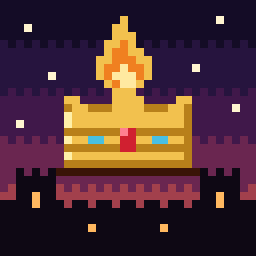

Emberfall: My LordSupport
Need a hand, my lord? Most answers are right here.
I can't hear any music or sounds.
Tap anywhere in the game once (sound starts on your first tap). Then check that Music and Sound are On in ⚙ Settings, the iPhone's silent switch is off, and the volume is up.
I bought the full year. How do I get it on another device?
Open Emberfall, tap ⚙ Settings and then Restore purchase. Use the same Apple ID you bought it with. It's a one-time purchase; you never pay again.
What do I get with the full year?
March to June is free, right up to the eve of Baron Vex's attack. One purchase of $1.99 unlocks Chapter Two, August to February: your cousin's claim to the throne, the hunt for your father's killer, the King's war, winter, the Midwinter Council and all 20 endings. No ads, no subscriptions.
How do I continue my game?
The game saves automatically before every visitor. On the title screen, tap Continue Reign.
How do I start over?
On the title screen, tap New Reign. Starting a new reign replaces your saved game, but the endings you've discovered are kept.
How many endings are there?
Thirteen. Tap Endings on the title screen to see which ones you've found. Some only appear if you make certain choices on earlier days.
Do I need the internet?
No. The whole game plays offline on your device.
Is my data collected?
No. There are no accounts, ads or tracking. See our Privacy Policy.